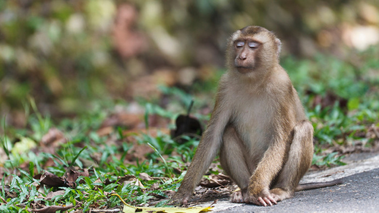

Naučno ime: Papio
Životni vek: 35 – 45 godina
Visina: 70 cm
Porodica: Majmuni Starog sveta
Masa: 20 – 30 kg
Tradicionalna petoformna klasifikacija verovatno nedovoljno odražava
varijacije unutar roda Papio. Neki komentatori smatraju da bi bar još
dve dodatne forme trebalo prepoznati, uključujući malog kinda babuna
(P. cynocephalus kindae) iz Zambije, DR Konga i Angole, i babuna sa
sivim stopalima (P. ursinus griseipes) koji obitava u Zambiji,
Botsvani, Zimbabveu, Mozambiku, i severnoj Južnoj Africi. Međutim,
trenutno poznavanje morfološke, genetičke i bihevioralne raznovrsnosti
unutar roda Papio je nedovljno da bi se donela finalna, sveobuhvatna
presuda po tom pitanju.Svi babuni imaju dugačke njuške, poput psećih,
teške, moćne vilice sa oštrim očnjacima, blisko smeštene oči, debelo
krzno izuzev na njihovim njuškama, kratke repove, i zadebljanja na
njihovim isturenim zadnjicama. Ta zadebljanja su delovi kože bez nerva
i dlake, koja služe za sedenje. Sve babunske vrste ispoljavaju
naglašeni seksualni dimorfizam, obično u vidu veličine, mada ponekad i
u pogledu boje ili razvijenosti očnjaka.
Naučno ime: Macaca
Životni vek: 20 – 27 godina
Visina: 41 cm
Porodica: Majmuni Starog sveta
Masa: 5 – 18 kg
Sve osim jedne vrste žive u Aziji. Areal berberskog makakija je u severozapadnoj Africi (Atlas planine) i na Gibraltaru u Evropi. Azijske vrste pretežno naseljavaju jug i jugoistok kontinenta. Najseverniji je japanski makaki. Veliki broj vrsta živi samo na ostrvu Celebes. Žive u velikim grupama. Neke vrste imaju dugačke repove, neke imaju kratke, a neke uopšte nemaju vidljiv rep.Većina makakija je smeđe boje, ali ima i crnih. Imaju ružičastu ili crvenu kožu lica i zadnjice.Krupniji su i imaju izušenija lica od gvenona, ali su manji i imaju kraća lica od pavijana.
Životni vek: 20 – 27 godina
Visina: 41 cm
Porodica: Majmuni Starog sveta
Masa: 5 – 18 kg
Sve osim jedne vrste žive u Aziji. Areal berberskog makakija je u severozapadnoj Africi (Atlas planine) i na Gibraltaru u Evropi. Azijske vrste pretežno naseljavaju jug i jugoistok kontinenta. Najseverniji je japanski makaki. Veliki broj vrsta živi samo na ostrvu Celebes. Žive u velikim grupama. Neke vrste imaju dugačke repove, neke imaju kratke, a neke uopšte nemaju vidljiv rep.Većina makakija je smeđe boje, ali ima i crnih. Imaju ružičastu ili crvenu kožu lica i zadnjice.Krupniji su i imaju izušenija lica od gvenona, ali su manji i imaju kraća lica od pavijana.


Naučno ime: Gorilla
Životni vek: 30 – 50 godina
Visina: 180 cm
Porodica: Majmuni Starog sveta
Masa: 295 – 310 kg
Gorile (lat. Gorilla) su najveći od svih današnjih primata i naseljavaju prašume Afrike. Podeljene na dve vrste: istočne (Gorilla beringei) i zapadne (Gorilla gorilla) gorile. Njihov DNK je u 97–98% identičan čovečijem i posle dve vrste šimpanze je najbliža živa vrsta slična čoveku.1847. godine, američki doktor i misionar Tomas S. Sevidž (Thomas S. Savage) prvi je opisao zapadnog gorilu (on ju je nazvao Troglodytes gorilla) iz dobijenih uzoraka u Liberiji. Ime je izvedeno od grčke reči Gorillai („pleme dlakavih žena“) koje je opisao istraživač Hanon Moreplovac, kartaginski moreplovac i mogući posetilac oblasti koja je kasnije postala Sijera Leone, oko 480. godine pre nove ere.Gorila sa srebrnim leđima je odrasli mužjak, stariji od 12 godina, nazvan po karakterističnom pramenu srebrne dlake na svojim leđima. Ima velike očnjake koji rastu kada gorila dostigne polnu zrelost. Oni su snažni, dominantni mužjaci i vodeći u čoporu. Čopor se obično sastoji od 5 do 30 gorila, među kojima on odlučuje o svemu, rukovodi čoporom, rešava sve sukobe, pronalazi izvore hrane i vodi brigu o bezbednosti grupe. Mlađi mužjaci sa oko 11 godina počinju da napuštaju svoj originalni čopor, putujući sami, ili sa drugim mužjacima oko 2-5 godina, dok ne budu dovoljno zreli da privuku ženke i osnuju sopstvenu grupu, i naravno počnu da se razmnožavaju. Ako bude izazvan od strane mlađeg ili uljeza gorile, mužjak sa srebrnim leđima će početi da vrišti, udara u svoje grudi, lomi granje, i konačno pojurišaće u napad. Ako vođa ugine ili bude ubijen, grupa će se razdvojiti i početi da traži drugog vođu koji će se starati o njima. Povremeno, jedan mužjak može da preuzme ceo čopor pod svoju zaštitu. Tada postoji šansa da će novi mužjak ubiti sve mladunce mrtvog mužjaka.
Životni vek: 30 – 50 godina
Visina: 180 cm
Porodica: Majmuni Starog sveta
Masa: 295 – 310 kg
Gorile (lat. Gorilla) su najveći od svih današnjih primata i naseljavaju prašume Afrike. Podeljene na dve vrste: istočne (Gorilla beringei) i zapadne (Gorilla gorilla) gorile. Njihov DNK je u 97–98% identičan čovečijem i posle dve vrste šimpanze je najbliža živa vrsta slična čoveku.1847. godine, američki doktor i misionar Tomas S. Sevidž (Thomas S. Savage) prvi je opisao zapadnog gorilu (on ju je nazvao Troglodytes gorilla) iz dobijenih uzoraka u Liberiji. Ime je izvedeno od grčke reči Gorillai („pleme dlakavih žena“) koje je opisao istraživač Hanon Moreplovac, kartaginski moreplovac i mogući posetilac oblasti koja je kasnije postala Sijera Leone, oko 480. godine pre nove ere.Gorila sa srebrnim leđima je odrasli mužjak, stariji od 12 godina, nazvan po karakterističnom pramenu srebrne dlake na svojim leđima. Ima velike očnjake koji rastu kada gorila dostigne polnu zrelost. Oni su snažni, dominantni mužjaci i vodeći u čoporu. Čopor se obično sastoji od 5 do 30 gorila, među kojima on odlučuje o svemu, rukovodi čoporom, rešava sve sukobe, pronalazi izvore hrane i vodi brigu o bezbednosti grupe. Mlađi mužjaci sa oko 11 godina počinju da napuštaju svoj originalni čopor, putujući sami, ili sa drugim mužjacima oko 2-5 godina, dok ne budu dovoljno zreli da privuku ženke i osnuju sopstvenu grupu, i naravno počnu da se razmnožavaju. Ako bude izazvan od strane mlađeg ili uljeza gorile, mužjak sa srebrnim leđima će početi da vrišti, udara u svoje grudi, lomi granje, i konačno pojurišaće u napad. Ako vođa ugine ili bude ubijen, grupa će se razdvojiti i početi da traži drugog vođu koji će se starati o njima. Povremeno, jedan mužjak može da preuzme ceo čopor pod svoju zaštitu. Tada postoji šansa da će novi mužjak ubiti sve mladunce mrtvog mužjaka.